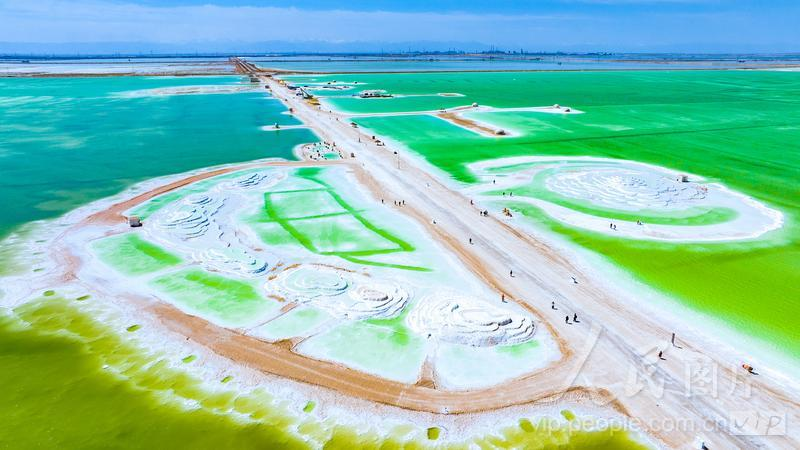
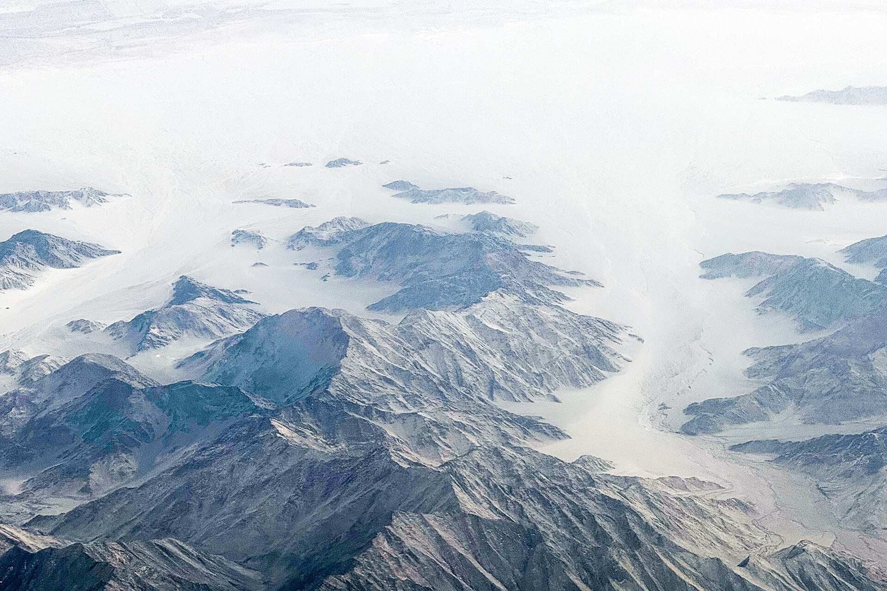
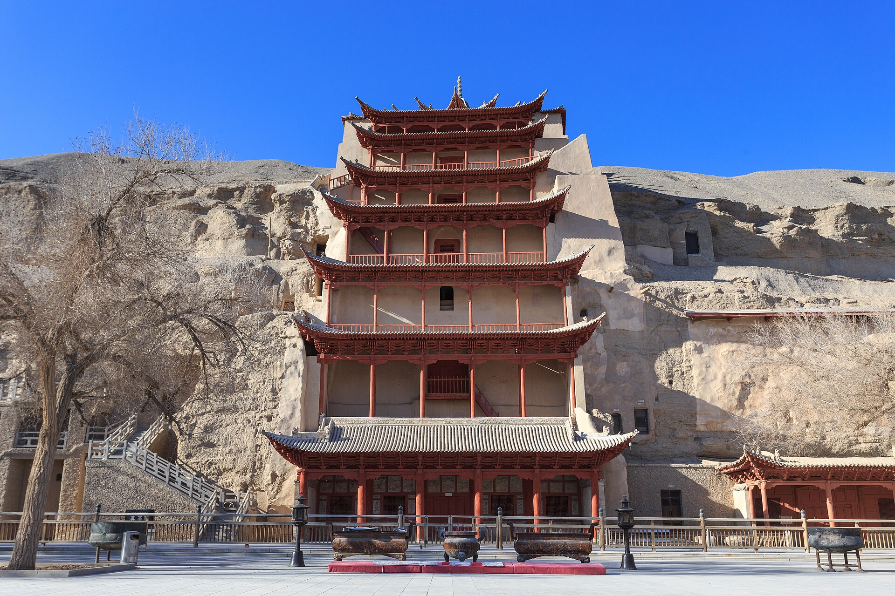
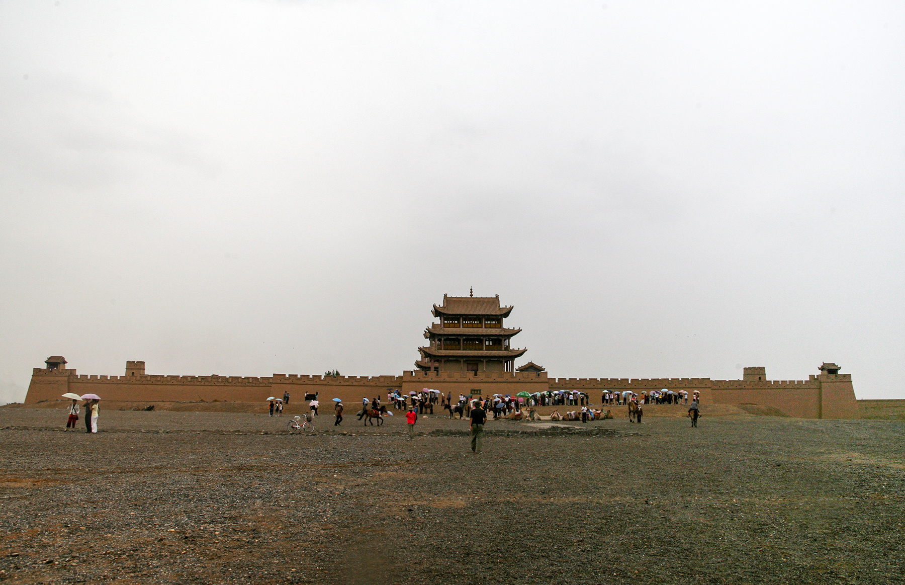
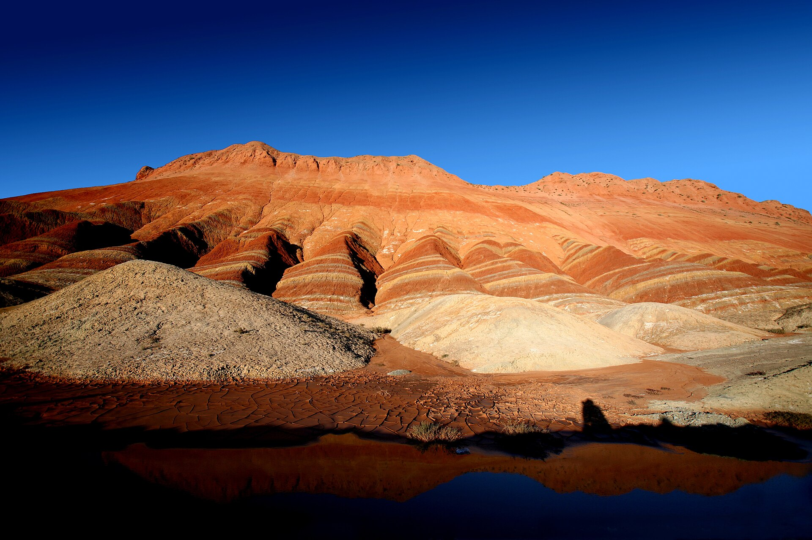
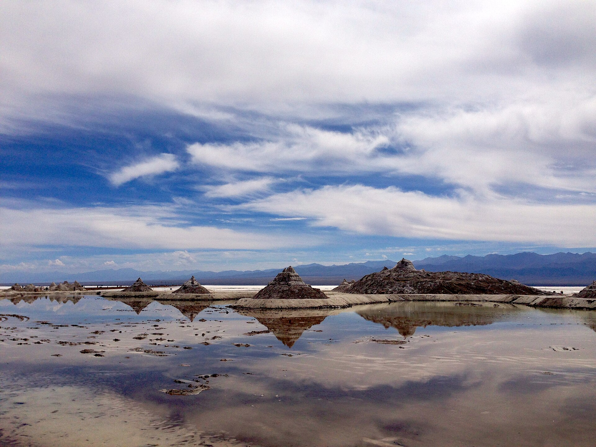
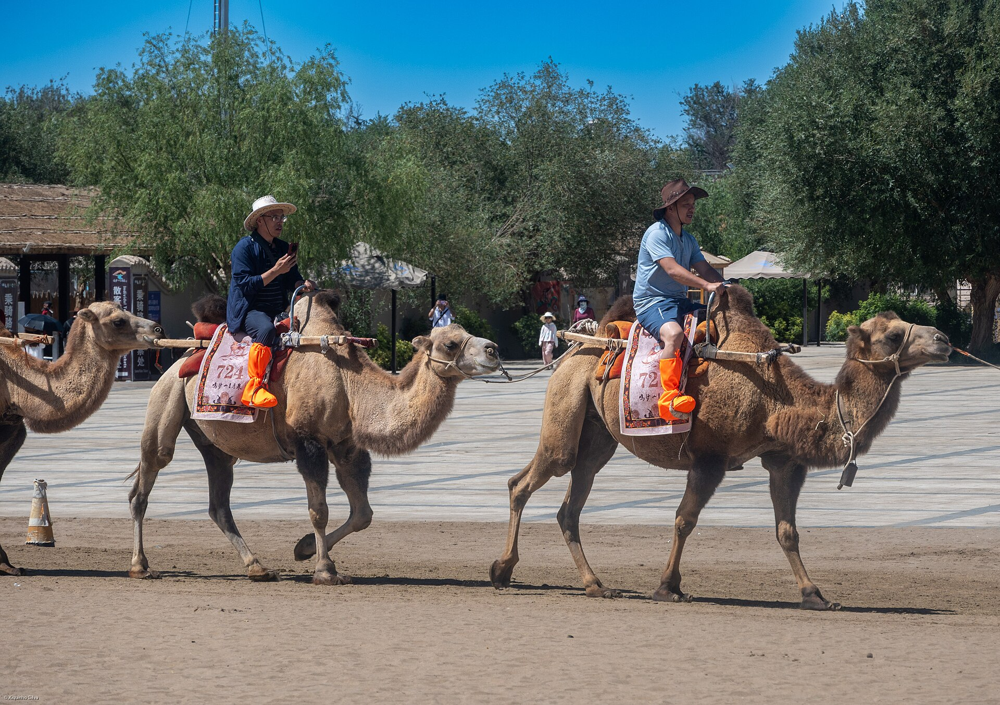

先给结论
这是一条值得去、但绝不轻松的景观公路线
视频清单已经完整纳入：察尔汗盐湖放在
D2，黑独山改走冷湖方向，不再绕去茫崖市区。全线约3000公里，短视频里同框的景点被切成几秒，现实里是多段高原、戈壁和长距离公路。D1、D2、D4、D6、D7
都是高强度转场日；遇到大风、沙尘、暴雨或疲劳，删一个点比赶夜路更正确。
西宁→青海湖→茶卡→德令哈→察尔汗→大柴旦→水上雅丹→冷湖黑独山→敦煌→嘉峪关→张掖→西宁
为什么不是把察尔汗盐湖塞进 D3？
察尔汗盐湖在格尔木方向，官方资料显示它南距格尔木约60公里、北离大柴旦约110公里；黑独山则在冷湖镇东北约12公里、紧邻215国道。它们不在同一段顺路线上。因此执行版把察尔汗放在
D2 的德令哈→大柴旦段，D3 专门留给水上雅丹，D4
再走冷湖黑独山→敦煌。这个安排仍然紧，但比“D3
同时塞察尔汗、水上雅丹、黑独山”更接近可执行。
广州/佛山怎么接：把“广州/佛山 → 西宁”放在 D0 晚上或 D1
前一晚完成，住西宁火车站/市中心圈。8天7晚按西宁集合、西宁散团计算；D8
专门给广州/佛山返程，不与景点硬接。
每日执行卡
默认折叠；旅行当天只点开当天
D1｜西宁 → 日月山 → 青海湖 → 茶卡 → 德令哈
视频全清单版的第一段长转场；茶卡只走主线，不追日落。
今晚：德令哈主路｜第1晚
视频全清单版的第一段长转场；茶卡只走主线，不追日落。
今日目标青海湖、茶卡各看核心，不反复折返
今日强度高，首日不夜逛
今日必带防晒、外套、水、充电宝
今日止损晚到就压缩日月山或茶卡
西宁出发。前一晚确认司机、车牌、日月山是否只作短停、青海湖进哪个正规入口。
日月山 + 青海湖。日月山只看观景点；青海湖优先一个正规入口和湖边步道，不在不同入口间反复折返。
茶卡盐湖主线。按当天小火车/步行安排看一个主线水面；正午反光、临时限流或天气差时不久留。
转德令哈入住。到店只吃饭、洗漱、确认 D2
察尔汗盐湖入园和车辆路线；不再追茶卡日落。
导航：西宁站 / 日月山景区 / 青海湖二郎剑景区 / 茶卡盐湖 / 德令哈酒店
下雨或太累：日月山直接取消；茶卡只走近入口主线。今天晚到德令哈没关系，绝不为补拍盐湖走夜路。
D2｜德令哈 → 察尔汗盐湖 → 翡翠湖 → 大柴旦
把察尔汗放在地理更顺的东段；今天是全线最需要早起的一天。
今晚：大柴旦主路｜第2晚
把察尔汗放在地理更顺的东段；今天是全线最需要早起的一天。

今日目标察尔汗完整走一处，翡翠湖只看主观景区
今日强度高，盐湖转场日
今日必带身份证、墨镜、防晒、外套、零食
今日止损晚到就删翡翠湖，不追夜景
德令哈出发。前一晚和司机核对察尔汗景区入口、入园时段、油量与午餐补给。察尔汗是正规景区，不能把盐场道路当作任意拍照区。
察尔汗盐湖。按景区当日检票、观光车和开放范围走；优先盐湖主观景区，预留约3小时，不追所有机位。
察尔汗 → 大柴旦。这段以安全转场为先；车上完成午餐、补水和休息。
翡翠湖轻量版。只看主观景区与水色；阴天、风大、司机提示将晚到时，先入住，翡翠湖直接删掉。
导航：德令哈酒店 / 察尔汗盐湖景区 / 大柴旦翡翠湖 / 大柴旦镇酒店
关键：察尔汗开放范围、观光车和翡翠湖入园政策会变；前一晚必须以官方、酒店前台和正规司机消息核对。
D3｜大柴旦 → 315U型公路 → 水上雅丹 → 大柴旦
典型戈壁日；白天看地貌，傍晚回同一酒店。
今晚：大柴旦｜第3晚
典型戈壁日；白天看地貌，傍晚回同一酒店。
今日目标公路地貌 + 水上雅丹
今日强度中高，景区与车程都长
今日必带水、帽子、口罩/魔术巾
今日止损风沙大时取消U型公路拍照
从大柴旦出发。先确认油量、饮水、车辆备胎/救援、景区最后入园时间；荒漠路段不要临时离队。
315U型公路短停。只能在安全合法停靠区拍照，不在道路中央、弯道或车流中停留。
水上雅丹。按景区摆渡/观光车线走，优先主观景台和水岸雅丹；太阳和风都强，别在无遮挡处耗太久。
返大柴旦。本日原则是天黑前回到镇上，晚饭后只充电休息。
天气差：强风、沙尘、道路预警或景区限流时，不勉强进水上雅丹；回镇上休整是安全方案。
D4｜大柴旦 → 冷湖石油小镇 → 黑独山 → 敦煌
这是视频全清单版最硬的转场日；黑独山只保留正规短停。
今晚：敦煌市区｜第4晚
这是视频全清单版最硬的转场日；黑独山只保留正规短停。

今日目标冷湖黑独山短停后安全到敦煌
今日强度很高，荒漠长车程
今日必带水、零食、纸巾、保湿、口罩
今日止损天气或道路不稳就删黑独山
大柴旦出发。司机必须写清今日实际线路、预计抵达敦煌时间、加油点、厕所点与是否会走夜路；两人不要只听“差不多能到”。
冷湖石油小镇 / 黑独山。冷湖只作补给或短停；黑独山位于冷湖镇东北方向，按景区当日摆渡和开放规则进，不走未开放荒漠野路。
转敦煌。不额外加“路边顺便景点”；若黑独山天气差、排队长或司机判断会晚到，立刻删黑独山，直奔敦煌。
敦煌市区酒店。只办入住、补给、吃清淡晚餐；睡前确认 D5
莫高窟预约时间。
风险提示：黑独山已是规范运营景区，不再按旧攻略擅自把车开进荒漠。出现沙尘、明显疲劳或车辆异常时，删点比赶夜路正确。
D5｜莫高窟 → 午休 → 鸣沙山月牙泉
核心文化 + 沙漠日，按预约时间走，不在正午爬沙丘。
今晚：敦煌市区｜第5晚
核心文化 + 沙漠日，按预约时间走，不在正午爬沙丘。

今日目标莫高窟预约优先，鸣沙山傍晚入园
今日强度中等，避开正午沙漠
今日必带身份证、预约、帽子、口罩、防沙袋
今日止损不上高沙丘，也不强行骑骆驼
莫高窟数字展示中心。不是直接导航洞窟区；流程以核验、数字展示、摆渡、实体洞窟讲解为主。洞窟内不能拍照。
回市区午饭与午休。下午沙漠暴晒时不赶景点，手机和充电宝都充满。
鸣沙山月牙泉。先看月牙泉，再决定是否走沙丘；鞋套、骑骆驼、滑沙均是可选，不是必做。
莫高窟没票：只查官方应急/临时票规则，不找不明代购；当天改敦煌博物馆 + 鸣沙山轻量版。
D6｜敦煌 → 嘉峪关 → 张掖
河西走廊转场日；嘉峪关只留关城主景区。
今晚：张掖市区｜第6晚
河西走廊转场日；嘉峪关只留关城主景区。

今日目标上午转嘉峪关，下午主关城，傍晚到张掖
今日强度高，控制嘉峪关时长
今日必带身份证、防晒、水、舒适鞋
今日止损只看关城，不加长城点
敦煌出发。火车/动车或车辆按实际车次和接驳安排；不选太晚班次。
嘉峪关关城。进主入口，优先城楼、关城主线；日晒强或太累时缩短为90分钟—2小时。
转张掖。入住市区主路/张掖西站周边，次日丹霞前早点睡。
迟到方案：嘉峪关抵达太晚就只在外部短看或直接张掖，不用为“全部打卡”压缩 D7。
D7｜张掖七彩丹霞 → 祁连草原 → 西宁
丹霞看核心光线，返西宁时不再另塞景点。
今晚：西宁站/市中心｜第7晚
丹霞看核心光线，返西宁时不再另塞景点。

今日目标丹霞主观景台 + 祁连草原车览
今日强度高，返程前的最后长车程
今日必带身份证、水、防晒、薄外套
今日止损阴天缩短丹霞，不走夜路
张掖七彩丹霞。景区观光车按当天调度；优先核心观景台，正午颜色发白、暴晒强时不久留。
祁连草原方向返西宁。草原以车览和安全停靠为主，不加牧场骑马等额外项目；沿途天气、路况或疲劳不稳时直接走更稳的返程线路。
西宁入住。住西宁站或市中心的可取消酒店，为 D8
飞机/火车返程留缓冲。
硬规则：今天的终点是西宁，不再把日落、网红路段或额外景点压进最后一段车程。
D8｜西宁 → 广州/佛山返程
只保大交通，不再补任何景点。
今晚：正常不住｜晚点备机场酒店
只保大交通，不再补任何景点。
今日目标平稳返程
今日强度低，给航班和火车留缓冲
今日必带身份证、订单、充电宝、水
今日止损不加青海湖或市区补点
西宁机场或西宁站。按航司/铁路要求预留到站时间；西宁机场较远时，前一晚就向酒店确认预约车或打车时间。
先保住住宿和下一段票。需要过夜就住机场圈/西宁站圈，别拖着行李临时找远处酒店。
返程提醒：8天7晚是从西宁集合到西宁散团的主线；广州/佛山往返机票或火车请单独按实际班次锁定。
包车与转场怎么定
先把全程责任和夜路边界写进订单D0｜广州/佛山 → 西宁
方式：飞机优先；抵达西宁后住市中心/火车站圈。
关键：不要把西宁落地日算进环线第一天。
D1—D7｜全程车
推荐：正规平台下单的全程小团/包车。确认车型、司机、保险、油费停车费、住宿餐费、每天最晚抵达时间和天气改线规则。
D8｜西宁返广州/佛山
建议：只安排返程航班或火车；若航班临时晚点，优先住西宁机场/西宁站圈的可取消酒店。
询价时直接问：“西宁出发8天7晚，覆盖日月山、青海湖、茶卡、察尔汗盐湖、大柴旦翡翠湖、水上雅丹、黑独山、敦煌、嘉峪关、张掖丹霞并回西宁；每天是否走夜路？两人总价含哪些？天气差删点怎么处理？请发平台订单和逐日路线。”
景点内部执行攻略
每个点都按“怎么进去、看什么、何时删”处理
 青海湖 / 日月山
青海湖 / 日月山
D1：一个正规湖边入口就够，不绕不同入口。
D1：一个正规湖边入口就够，不绕不同入口。
走法：日月山短停 → 青海湖正规入口 → 湖边步道/观景台 →
去茶卡。
必看：湖面、草原、远山。
删法：阴雨、风大、晚到时，直接删日月山或压缩湖边步行。
提醒：别为野路和私围栏停靠，优先正规景区与安全停车点。

茶卡盐湖
D1：按当天开放时间走主线，防晒和反光管理比摆拍更重要。
D1：按当天开放时间走主线，防晒和反光管理比摆拍更重要。
入园前：身份证、预约/购票信息、墨镜、防晒、外套、水。
走法：以当天小火车/步行规则为准，走一条主线即可。
删法：大风、雨水、阴天水面效果差时缩短，不要为“天空之镜”久等。
注意：开放、交通车、鞋套等以官方公告为准。
察尔汗盐湖
D2：格尔木方向的正规4A盐湖景区，按开放范围和观光车走。
D2：格尔木方向的正规4A盐湖景区，按开放范围和观光车走。
入园前：身份证、当日票务/预约信息、墨镜、防晒、水和薄外套。
怎么走：导航“察尔汗盐湖景区”，按检票、观光车和允许区域游览；不要把盐田生产道路或封闭路段当作拍照机位。
必看：盐湖主观景区与盐湖纹理；预留约3小时后回车转大柴旦。
可删：如出现限流、风沙、晚到或司机判断会挤压天黑前到大柴旦，删翡翠湖，不删察尔汗主线。
核对：开放时间、票价、观光车和可进入范围以景区官方、公众号和当天现场公告为准。
翡翠湖 / 水上雅丹 / 黑独山
D2—D4：三个是荒漠湖泊地貌组合，天气优先级高于打卡数量。
D2—D4：三个是荒漠湖泊地貌组合，天气优先级高于打卡数量。
翡翠湖：看主观景区水色即可，阴天则不延长。
水上雅丹：进正规景区、按摆渡车线走；强风沙尘时取消。
黑独山：位于冷湖镇东北方向，按景区摆渡与当日开放规则进入，不再因网红照片开车冲进荒漠。
共同准备：水、零食、防晒、帽子、口罩/魔术巾、充电宝；荒漠路段不脱离车辆。
莫高窟
D5：预约第一优先，导航去数字展示中心。
D5：预约第一优先，导航去数字展示中心。
流程：提前到数字展示中心 → 核验/数字展示 → 摆渡 → 洞窟讲解
→ 原路返回。
必做：带身份证，听讲解；洞窟内不能拍照。
删法：没买到正常票不找代购，按官方应急票规则或改博物馆。
后续：中午回市区午休，傍晚再去鸣沙山。

鸣沙山月牙泉
D5：傍晚入园，先泉后沙丘。
D5：傍晚入园，先泉后沙丘。
走法：进门先到月牙泉拍摄区，再按体力决定是否走附近沙丘。
非必需：骆驼、滑沙、鞋套、越野项目都不是必须。
防沙：墨镜、口罩/魔术巾、手机密封袋；出园后回酒店清理鞋袜。
删法：风沙大或累时只看月牙泉周边，不上高沙丘。
嘉峪关关城
D6：河西走廊收尾，只看关城主线。
D6：河西走廊收尾，只看关城主线。
走法：进关城主入口，看城楼与主线；超过2小时就该转张掖。
删法：抵达太晚、暴晒或太累时，取消入园或只做外部短看。
提醒：不要为了补长城点压缩 D7 回西宁时间。
张掖七彩丹霞
D7：景区观光车走核心观景台，之后只保回西宁。
D7：景区观光车走核心观景台，之后只保回西宁。
走法：按景区观光车走核心观景台；下午/傍晚光线通常更适合，具体以当天安排为准。
删法：阴天只走主站，不久等；天气或车次不稳时缩短。
提醒：高温、风、长车程叠加，D7 不额外插景点。
7晚住宿流转
不住孤点，全部优先主路、热水和可取消| 晚上 | 城市/住宿圈 | 订房关键词 | 第二天关键 |
|---|---|---|---|
| D0 | 西宁市中心/西宁站 | 西宁站 酒店 可取消 | 次晨好集合 |
| D1 | 德令哈主路/市区 | 德令哈 市区酒店 可取消 | 早去察尔汗盐湖 |
| D2-D3 | 大柴旦镇主路 | 大柴旦 酒店 主路 热水 | 水上雅丹、冷湖方向 |
| D4-D5 | 敦煌市区/沙洲夜市周边 | 敦煌市区 酒店 可寄存 | 莫高窟与鸣沙山方便 |
| D6 | 张掖市区/张掖西站 | 张掖市区 酒店 近主路 | 丹霞后返西宁 |
| D7 | 西宁站/市中心 | 西宁站 酒店 可取消 | D8大交通返程 |
| D8 | 正常不住/机场备选 | 西宁机场 酒店 可取消 | 航班晚点时才使用 |
不吃辣怎么吃
全线默认清淡，不把重口味当体验任务
直接给店员看：“我们完全不能吃辣，辣椒、红油、花椒、麻油都不要，蘸料也不要辣，麻烦做清淡一点。”
高原与小镇
优先清汤面、牛肉面不辣、炒青菜、米饭、鸡蛋、酸奶；车上备面包、牛奶、巧克力，不赌偏远路段餐厅。
敦煌
清汤面、驴肉黄面备注不辣、羊肉汤、清淡家常菜；烧烤、凉拌菜和蘸料先问辣度。
张掖/西宁
搜“清汤面 / 蒸菜 / 清淡家常菜”，只选酒店步行10分钟或司机顺路的店，别为网红店绕路。
出发前48小时核对
这条线的准备，比多塞一个景点重要车与司机
- 平台订单、司机姓名电话、车牌已确认
- 逐日路线和最晚抵达时间写清
- 油费、停车费、司机食宿、门票包含项写清
- 沙尘/大雨时能否改线或取消
票务住宿
- 西宁进出大交通和D8返程已核
- 茶卡、察尔汗、水上雅丹、黑独山、莫高窟、鸣沙山、丹霞的预约/开放状态已核
- 所有酒店可取消、热水、靠主路、可寄存
物品
- 身份证、充电器、充电宝、数据线
- 帽子、墨镜、防晒、防晒衣、薄外套
- 口罩/魔术巾、润唇膏、保湿用品
- 水、轻食、晕车药、肠胃药、创可贴
当天规则
- 不走未经司机确认的野路
- 不在公路中央拍照
- 不因日落或照片需求走长夜路
- 晚上回酒店先补水、洗漱、充满电
应急方案
提前决定删什么，现场就不会乱风沙 / 道路预警
取消黑独山与水上雅丹的长停留，直接去下一住宿地；不在风沙里等“可能会好转”。
莫高窟没票或预约错时
只认官方平台规则。上午票就下午鸣沙山；下午票则上午市区休息，鸣沙山改轻量版或挪到当晚。
车上太累 / 晕车
先删日月山、翡翠湖加拍、黑独山、嘉峪关长城点和丹霞非核心台。保留住宿与大交通，别硬撑夜路。
预算超了
优先保正规车和安全住宿；减少骑骆驼、滑沙、旅拍、额外观光项目和网红餐，不压缩莫高窟预约与返程缓冲。
来源与核对
所有实时票务、开放、车次和天气以出发前实际页面为准察尔汗盐湖
格尔木市政府景区介绍：位置、景区属性与实时公告核对入口。
黑独山
中国旅游集团景区介绍：冷湖镇位置和规范运营信息；进景区方式以当天公告为准。
莫高窟
敦煌研究院 / 莫高窟官方：预约、票种、参观规则。
张掖丹霞
张掖市政府及景区官方公告：开放和交通安排。
图像授权
页面风景图以 Wikimedia Commons 的 CC 授权实景照片为主；察尔汗盐湖图片保留了来源水印，具体来源与许可说明保留在项目图片来源清单。
本攻略用于旅行执行参考。道路管制、景区开放、门票、观光车、莫高窟预约、包车报价、天气都会变化。出发前请以官方、正规平台订单、高德和酒店/司机实际通知为准。